01 — BASICS
처음 시작하기Getting started
해방툴은 롬 폴더를 넣으면 게임을 알아서 찾아 제목 · 설명 · 표지 · 영상 · 설명서를 붙이고, 그 라이브러리를 해방런처 · ES-DE · Pegasus · 리눅스 게임기로 보내 주는 Windows 프로그램입니다.The Rom Tool takes your ROM folders, identifies every game, adds titles, descriptions, box art, videos and manuals, and sends the finished library to HB Launcher, ES-DE, Pegasus or a Linux handheld. It runs on Windows.
기본 흐름 — 네 단계면 끝The basic flow — four steps
이미 ES-DE · Pegasus 로 세팅해 둔 라이브러리가 있다면 1 · 2 단계 대신 가져오기로 한 번에 들여올 수 있습니다.Already have an ES-DE or Pegasus library? Import it instead of steps 1 and 2.
무엇을 하고 싶으세요?What do you want to do?
공개 버전 · 후원자 베타 · PROPublic build, sponsor beta and PRO
| 구분Edition | 누가 · 어떻게Who and how | 다른 점What differs |
|---|---|---|
| 공개 버전 (v1.1)Public (v1.1) | 누구나 무료로 받습니다.Free for everyone. | 일부 민감한 시스템이 빠져 있고, 새 기능은 다음 메이저 업데이트(1.2 …) 때 한꺼번에 들어옵니다. 자동 업데이트가 없습니다.Some sensitive systems are left out, and new features arrive together at the next major release (1.2 …). No auto-update. |
| 후원자 베타 (v1.1.8)Sponsor beta (v1.1.8) | 후원하면 받는 스폰서 코드로 내려받습니다.Downloaded with the sponsor code you get for donating. | 모든 시스템 · 새 기능을 가장 먼저 받고, 앱 안에서 새 베타로 자동 업데이트됩니다.Every system, new features first, and in-app updates to each new beta. |
| PROPRO | PRO 업그레이드 코드를 상단의 PRO UPGRADE에 넣습니다.Enter a PRO upgrade code in PRO UPGRADE at the top. | 외부 기기로 전환 · 게임 아카이브 · HB파일 · 전자상가 · 세이브 보관함 · AI 연결을 씁니다. 이 문서에서 PRO 표시가 붙은 기능입니다.Adds Switch to device, Game Archive, HB file, the Retro Mall, the save vault and the AI link — everything marked PRO here. |
02 — SCREEN
화면 둘러보기A tour of the screen
왼쪽은 시스템, 가운데는 게임 목록, 오른쪽은 고른 게임의 정보 · 미디어입니다. 게임을 고르면 시스템 목록은 왼쪽 끝으로 접힙니다(SYSTEMS 띠를 누르면 다시 펼쳐짐).The systems are on the left, the game list in the middle, and the selected game's info and media on the right. Selecting a game folds the system list into the SYSTEMS strip — click it to open it again.

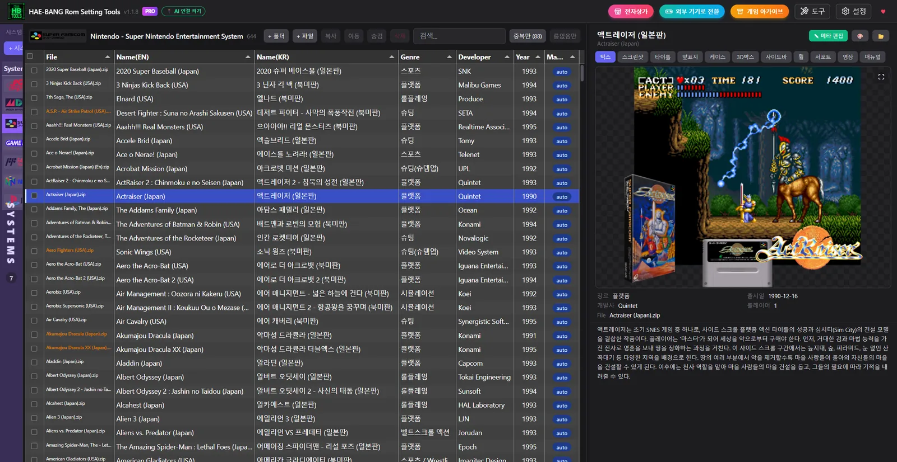
위쪽 단추Buttons along the top
| 단추Button | 하는 일What it does |
|---|---|
| AI 연결 켜기 PROTurn on AI link PRO | Claude Desktop · Codex 같은 AI 앱이 해방툴을 다루게 합니다. 자세히Lets AI apps such as Claude Desktop or Codex drive the app. More |
| 전자상가 PRORetro Mall PRO | 내 라이브러리를 가게로 열어 해방런처 기기가 구경하고 가져가게 합니다. 자세히Opens your library as a shop that HB Launcher devices can browse and take games from. More |
| 외부 기기로 전환 PROSwitch to device PRO | 연결한 기기의 라이브러리를 바로 열어 고칩니다. 자세히Opens a connected device's library for direct editing. More |
| 게임 아카이브 PROGame archive PRO | 롬이 없어도 모든 시스템의 게임 정보 · 미디어를 봅니다.Browse every system's game info and media without ROMs. |
| 도구Tools | APK 관리 · 게임저장 공유 · 세이브 보관함 · BIOS 점검. 자세히APK manager, save sharing, save vault and BIOS check. More |
| 설정Settings | 언어 · 테마 · AI · 캐시 · 업데이트. 자세히Language, theme, AI, cache and updates. More |
| ♥♥ | 후원하기 · 스폰서 코드 받기Donate and get a sponsor code |
시스템 목록 위Above the system list
- + 시스템 새 시스템 추가 · ⬆ 내보내기 기기로 보내기(일반 / HB런처 중 고름)+ System adds a system · ⬆ Export sends it out (choose standard or HB Launcher)
- 작은 아이콘 — ↻ 고른 시스템 재스캔 · 실행기(코어) 설정 · 컨트롤러 키 설정 · 🌐 리전 순서 · 🗑 삭제Small icons — ↻ rescan selected · emulator (core) settings · controller mapping · 🌐 region order · 🗑 delete
- HB파일 PRO 라이브러리를 파일 하나로 저장 · 불러오기 · HB런처 지금 라이브러리로 해방런처를 바로 켜기(Windows)HB file PRO saves or loads the whole library as one file · HB Launcher opens HB Launcher on this library right away (Windows)
03 — SYSTEMS
시스템 추가하기Adding a system
시스템 = 콘솔 하나의 게임 묶음입니다. 콘솔 종류와 롬 폴더만 고르면 나머지는 해방툴이 합니다.A system is one console's game set. Pick the console and the ROM folder; the Rom Tool does the rest.

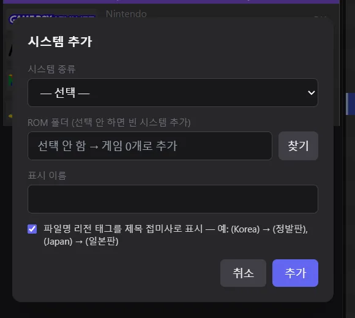
- 왼쪽 위 + 시스템 → 로컬 (롬 파일)을 누릅니다. (다른 프론트엔드에서 쓰던 목록은 외부 세팅 정보 (가져오기))Click + System → Local (ROM files). (Lists from another front-end go through External library (Import).)
- 시스템 종류에서 콘솔을 고릅니다. 예: 슈퍼패미컴, 메가드라이브, 플레이스테이션.Pick the console in System type — e.g. Super Famicom, Mega Drive, PlayStation.
- 찾기로 ROM 폴더를 고릅니다. 비워 두면 게임 0개인 빈 시스템이 생기고, 롬은 나중에 넣어도 됩니다.Choose the ROM folder with Browse. Leave it empty to start an empty system and add ROMs later.
- 추가를 누르면 매칭(0~20%) → 미디어 받기(20~95%) 순서로 진행 막대가 찹니다.Click Add — the progress bar runs through matching (0–20%) and then media download (20–95%).
하위 폴더가 많은 롬 폴더라면If the ROM folder has many sub-folders
고른 폴더 안에 롬셋 · 장르별 하위 폴더가 있으면(예: fbneo 아래 neogeo · cps1) "폴더를 살펴봤습니다 — 어떻게 넣을까요?" 창이 뜹니다.If the folder contains romset or genre sub-folders (e.g. neogeo and cps1 under fbneo), a "How should this folder be added?" window opens.
- 폴더별로 구분해서 시스템 생성(권장) — 체크한 하위 폴더마다 시스템을 따로 만듭니다.Create a system per folder (recommended) — one system for each ticked sub-folder.
- 각 폴더를 게임 1개로 처리 — 시스템 하나로 넣고 하위 폴더 하나를 게임 하나로 셉니다.Treat each folder as one game — a single system where each sub-folder counts as one game.
- CHD 폴더 · 압축 푼 사본 · bios 같은 곁다리 폴더는 걸러 중복 등록을 막고, 여러 장짜리 CD 게임은 한 게임으로 셉니다.Side folders (CHD data, unzipped copies, bios) are filtered out, and multi-disc games count once.
게임을 얼마나 잘 찾나요?How well does it match?
파일 이름을 분석해 9만 3천여 게임 DB 에서 찾습니다. 한글 파일 이름, 버전 꼬리표(v1.2 (K)), 한글패치 꼬리표, 대표 약어도 알아봅니다. PS1 · PS2 · PSP · GBA · NDS 는 디스크 · 카트리지 번호(시리얼)로도 찾고, 그래도 애매하면 AI에게 후보를 보여 주고 고르게 할 수 있습니다.Filenames are matched against a 93,000+ game database — Korean names, version tags (v1.2 (K)), Korean-patch tags and common abbreviations included. PS1, PS2, PSP, GBA and NDS are also matched by disc or cartridge serial, and anything still unclear can be handed to the AI with a shortlist.
시스템 목록 다루기Managing the system list
- 순서 바꾸기 — 줄을 누른 채 끌어 옮기면 다시 켜도 그 순서입니다. 머리글 System을 누를 때마다 ■ 지정 순서 → ▲ 오름차순 → ▼ 내림차순.Reorder — drag a row; the order sticks. Clicking the System header cycles ■ custom → ▲ ascending → ▼ descending.
- 줄 위에 마우스를 올리면 ↻ 재스캔 · 🌐 이 시스템 리전 · 🗑 삭제 단추가 나옵니다.Hover a row for ↻ rescan, 🌐 this system's region and 🗑 delete.
- 표시 이름 · 폴더 이름 — 시스템 줄에서 바꿀 수 있습니다. 폴더 이름은 내보낼 때 기기 쪽 폴더 이름이 됩니다.Display and folder name can be edited on the row; the folder name becomes the folder on the device.
04 — GAMES
게임 다루기Working with games
게임 목록 위의 단추와 우클릭 메뉴로 게임을 더하고, 옮기고, 숨기고, 다시 찾습니다.Use the buttons above the list and the right-click menu to add, move, hide or re-match games.

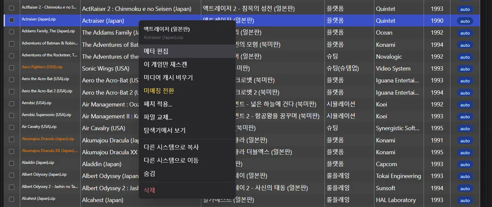
목록 위 단추Buttons above the list
| 단추Button | 하는 일What it does |
|---|---|
| + 폴더 / + 파일+ Folder / + Files | 지금 시스템에 롬을 더합니다(이미 있는 파일은 건너뜀). 파일은 끌어다 놓아도 됩니다.Adds ROMs to this system (existing files are skipped). You can also drag files in. |
| 복사 / 이동Copy / Move | 체크한 게임을 다른 시스템으로 복사하거나 옮깁니다.Copies or moves ticked games to another system. |
| 숨김Hide | 목록에서 감춥니다. 내보낼 때 새로 보내지 않습니다(기기에 이미 있던 것은 그대로 — 아래 참고).Hides games. They are not sent on export (games already on the device stay — see below). |
| 삭제Delete | 목록에서 빼거나 롬 파일까지 지웁니다(지우기 전에 묻습니다).Removes games from the list, or deletes the ROM files too (asks first). |
| 중복만 / 롬없음만Duplicates / No ROM | 같은 게임이 여러 개인 것, 롬 파일이 사라진 것만 보여 줍니다.Shows only duplicates, or entries whose ROM file is gone. |
| M3U 병합Merge M3U | 디스크 여러 장을 체크하면 나타납니다. 한 게임(.m3u)으로 묶습니다.Appears when several discs are ticked; bundles them into one game (.m3u). |
우클릭 메뉴The right-click menu
| 메뉴Item | 하는 일What it does |
|---|---|
| 메타 편집Edit meta | 정보 · 그림을 고칩니다. 5장Edit info and art. Chapter 5 |
| 이 게임만 재스캔Rescan this game | 이 게임만 다시 찾고 미디어를 다시 받습니다.Re-match this game and re-download its media. |
| 미디어 캐시 비우기Clear media cache | 받아 둔 그림 · 영상을 지우고 새로 받게 합니다.Drops cached art and video so they download fresh. |
| 미매칭 전환Mark unmatched | 잘못 찾은 게임을 "찾지 못함"으로 되돌립니다.Turns a wrong match back into "unmatched". |
| 패치 적용…Apply patch… | IPS · BPS 등 패치 파일을 롬에 적용합니다(한글패치 등).Applies an IPS/BPS (etc.) patch to the ROM — e.g. a Korean patch. |
| 파일 교체…Replace file… | 정보는 그대로 두고 롬 파일만 바꿉니다.Swaps the ROM file while keeping its info. |
| 탐색기에서 보기Show in Explorer | 롬 파일이 있는 폴더를 엽니다.Opens the ROM's folder. |
| 다른 시스템으로 복사 / 이동 · 숨김 · 삭제Copy / move to another system · Hide · Delete | 목록 위 단추와 같습니다.Same as the buttons above the list. |
다시 찾기 (재스캔)Rescanning
시스템 줄의 ↻ 를 누르면 세 가지 중 고릅니다.The ↻ on a system row offers three choices.
- 전체 재스캔 — 모든 게임을 다시 찾고 미디어를 다시 받습니다.Full rescan — re-matches every game and re-downloads media.
- 비어 있는 미디어만 보강 — 그림 · 영상이 빠진 것만 채웁니다.Fill missing media only — fills in only missing art and video.
- 롬파일만 정리 — 롬이 사라진 항목을 목록에서 정리합니다.Tidy ROM files only — clears entries whose ROM is gone.
한글패치 정보 (KR)Korean patch info (KR)
한글패치가 나온 게임에는 목록 위에 KR 칩과 Patch 열이 붙습니다. 정보 칸의 [패치] 탭에서 내 롬 파일의 해시가 패치에 맞는 원본인지 확인하고, 패치 배포처 열기로 패치 글을 엽니다. 패치 목록은 설정 › 업데이트에서 새로 받습니다.Games with a Korean patch get a KR chip and a Patch column. The [Patch] tab in the info panel checks whether your ROM's hash is the right original, and Open patch source opens the patch page. Update the patch list in Settings › Update.
05 — META
정보 · 그림 고치기Fixing info and art
게임을 우클릭 → 메타 편집(또는 정보 칸의 ✎ 메타 편집). 왼쪽에서 맞는 게임을 고르고, 가운데에서 글자를, 오른쪽에서 그림을 고칩니다.Right-click a game → Edit meta (or ✎ Edit meta in the info panel). Pick the right game on the left, edit text in the middle and art on the right.

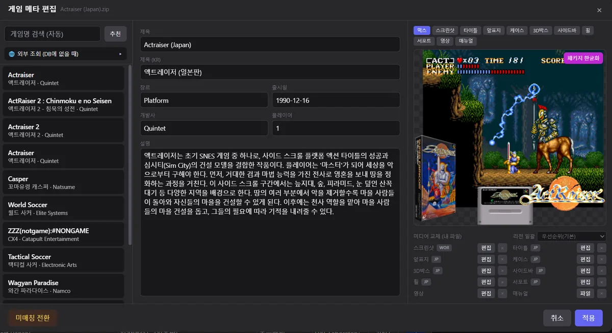
1) 맞는 게임 고르기1) Pick the right game
- 왼쪽 후보 목록에서 누르면 바로 미리 보입니다. 추천은 비슷한 이름의 후보, 위 검색 칸은 직접 찾기입니다.Click a candidate to preview it. Recommend lists similar titles; the box above searches directly.
- DB 에 없는 게임은 🌐 외부 조회 (DB에 없을 때) → 스크래퍼 검색(ScreenScraper) 또는 AI로 채우기.For games not in the database: 🌐 External lookup → Scraper search (ScreenScraper) or Fill with AI.
2) 글자 고치기2) Edit the text
제목 · 한글 제목 · 장르 · 출시일 · 개발사 · 인원 · 설명을 바로 고칩니다. 적용을 눌러야 저장됩니다.Edit the title, Korean title, genre, date, developer, players and description, then click Apply to save.
3) 그림 · 영상 바꾸기3) Change art and video
오른쪽 아래 미디어 교체 (내 파일) 줄에서 슬롯마다 편집을 누르면 미디어 편집 창이 열립니다. 리전(US · EU · JP)을 바꾸면 그 지역판 그림으로 바뀝니다.In Replace media at the bottom right, click Edit on any slot to open the media editor. Switching the region (US, EU, JP) swaps in that region's art.

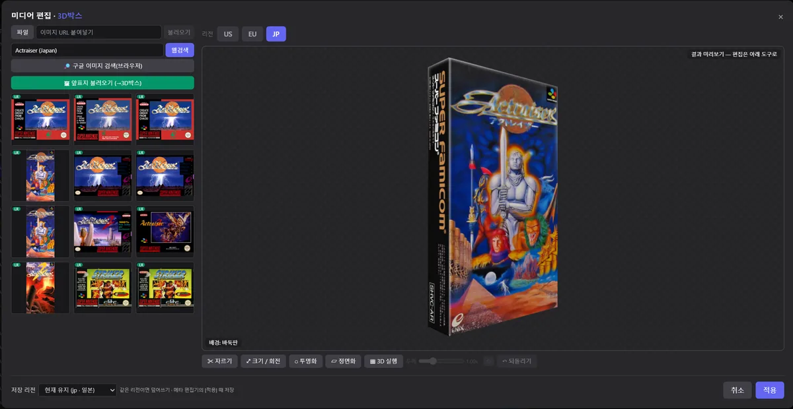
| 도구Tool | 하는 일What it does |
|---|---|
| ✂ 자르기 · ⤢ 크기 / 회전✂ Crop · ⤢ Resize / rotate | 필요한 부분만 남기고 방향을 맞춥니다.Trim and straighten the picture. |
| ◌ 투명화◌ Transparency | 로고 · 휠 그림의 바탕을 지웁니다.Removes the background of logos and wheels. |
| ▱ 정면화▱ Straighten | 비스듬히 찍힌 사진을 반듯하게 폅니다.Flattens a photo taken at an angle. |
| ▦ 3D 실행▦ 3D | 앞표지로 3D 박스를 만듭니다(두께 조절).Builds a 3D box from the front cover (adjustable thickness). |
| ▣ 서포트 만들기▣ Make support | 카트리지 · 디스크(매체) 그림을 시스템 틀로 만듭니다.Makes the cartridge or disc (media) picture from the system template. |
| 구글 이미지 검색 · 웹 검색Google / web image search | 웹에서 그림을 찾아 바로 넣습니다. 내 파일 · 주소 붙여넣기도 됩니다.Find a picture on the web and drop it in — or use your own file or a URL. |
패키지 한글화 (AI)Package Koreanization (AI)
미리보기 오른쪽 위 패키지 한글화를 누르면 표지 · 로고의 일본어 · 영어 글자를 AI 가 한글로 바꾼 그림을 만들어 줍니다. 한 번에 만들고 마음에 드는 것만 골라 적용합니다. ChatGPT 또는 Gemini API 키가 필요합니다.Click Package Koreanization on the preview to have AI redraw the cover and logo text in Korean. Generate, then apply only the ones you like. Needs a ChatGPT or Gemini API key.
믹스 이미지 · 리전Mix image and regions
- 믹스 이미지(스크린샷 + 박스 + 로고 + 매체를 합친 그림)의 배치는 정보 칸의 믹스 편집 단추에서 정합니다. 전체 또는 시스템별로 저장되고, 새 게임에도 같은 모양이 쓰입니다.The layout of the mix image (screenshot + box + logo + media) is set from the mix button in the info panel — globally or per system — and reused for new games.
- 리전 순서 — 시스템 위 🌐 로 "어느 지역판 그림을 먼저 쓸지"를 정합니다. 시스템 줄의 🌐 는 그 시스템만, 메타 편집의 리전 일괄은 그 게임의 모든 슬롯을 한 번에 바꿉니다.Region order — 🌐 above the systems sets which region's art comes first; 🌐 on a row does one system, and batch region in the meta editor switches every slot of one game.
06 — EXPORT
기기로 내보내기Exporting to a device
⬆ 내보내기 → 일반 내보내기. 대상 기기와 프론트엔드를 고르면, 그 프론트엔드가 읽는 모양대로 목록(gamelist) · 그림 · 영상 · 롬을 보냅니다.⬆ Export → Standard export. Pick the device and front-end, and the list (gamelist), art, video and ROMs are sent in the shape that front-end reads.

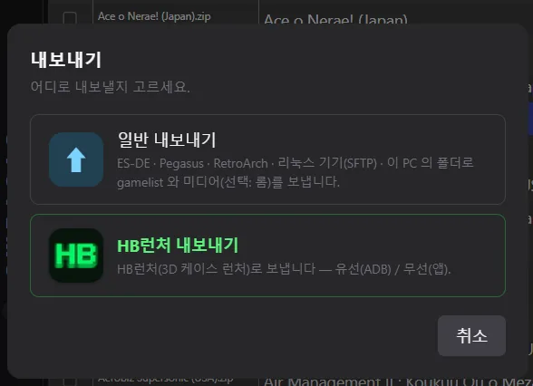

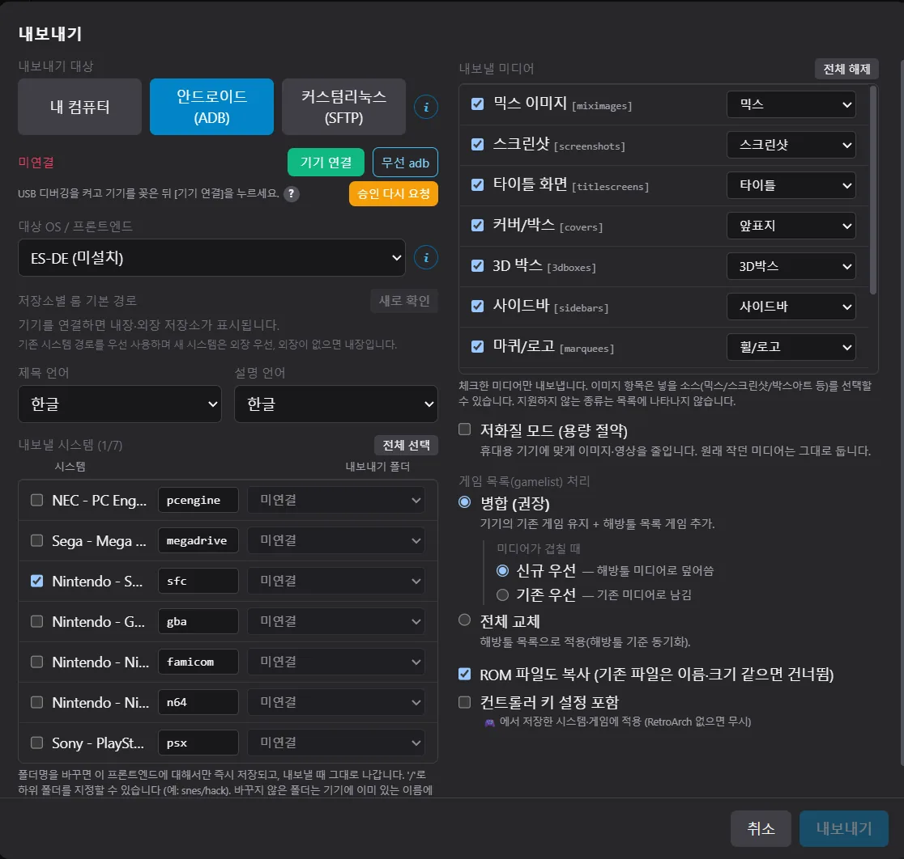
- 내보내기 대상을 고릅니다 — 내 컴퓨터 · 안드로이드 (ADB) · 커스텀리눅스(SFTP).Pick the target — Local PC, Android (ADB) or custom Linux (SFTP).
- 대상 OS / 프론트엔드를 고릅니다(아래 표).Pick the OS / front-end (table below).
- 안드로이드는 기기 연결, 리눅스는 IP · 계정을 넣고 연결합니다. 내 컴퓨터는 대상 폴더를 고릅니다.Android: Connect device. Linux: enter the IP and account. Local PC: choose the target folder.
- 보낼 시스템을 체크하고, 보낼 미디어(믹스 · 스크린샷 · 박스 …)를 고릅니다.Tick the systems and choose which media to send (mix, screenshots, boxes …).
- 내보내기 → 내보내기 전 확인 창에서 보낼 용량과 남은 공간을 보고 시작합니다.Click Export, check the size and free space in the pre-export check, and go.
| 대상Target | 프론트엔드 / OSFront-ends / OS |
|---|---|
| 내 컴퓨터Local PC | ES-DE · Pegasus · RetroArch (폴더로 만들어 USB · SD 에 옮겨 써도 됩니다)ES-DE, Pegasus, RetroArch (build into a folder, then copy to USB or SD) |
| 안드로이드 (ADB)Android (ADB) | ES-DE · Pegasus · RetroArch — USB 케이블, 또는 무선 adb(안드로이드 TV 등)ES-DE, Pegasus, RetroArch — USB cable or Wireless adb (Android TV etc.) |
| 커스텀리눅스 (SFTP)Custom Linux (SFTP) | Batocera · KNULLI · ROCKNIX · JELOS · ArkOS · muOS · OnionOS · RG34xxSP / TSP 순정 — 같은 Wi-FiBatocera, KNULLI, ROCKNIX, JELOS, ArkOS, muOS, OnionOS, RG34xxSP / TSP stock — same Wi-Fi |
알아 두면 좋은 선택Useful options
- 게임 목록 처리 — 병합 (권장)은 기기에 있던 목록을 살리고 해방툴 게임을 더합니다. 전체 교체는 해방툴 목록으로 바꿉니다.Game list handling — Merge (recommended) keeps the device's list and adds yours; Replace all swaps it for the Rom Tool's list.
- ROM 파일도 복사 — 같은 이름 · 크기의 파일은 건너뛰어 다시 보낼 때 빠릅니다.Copy ROM files — files with the same name and size are skipped, so re-sends are quick.
- 저화질 모드 — 휴대 기기 화면에 맞게 그림 · 영상을 줄여 용량을 아낍니다.Low-res mode — shrinks art and video for handheld screens to save space.
- 저장소별 롬 기본 경로(안드로이드 ES-DE · Pegasus) — 내장 · SD 카드를 시스템마다 고릅니다. 이미 있는 시스템은 쓰던 자리, 새 시스템은 외장이 먼저입니다.Per-storage ROM paths (Android ES-DE / Pegasus) — choose internal or SD per system. Existing systems keep their place; new ones prefer external storage.
- RetroArch 앱 — 기기에 RetroArch 가 둘 이상이면 고릅니다. HB레트로아크가 있으면 먼저 쓰고, 끝나면 없는 코어를 받을지 묻습니다.RetroArch app — chosen when the device has more than one. HB RetroArch comes first, and afterwards you're offered any missing cores.
- 숨긴 게임 N개를 기기 목록에서도 빼기 — 기본은 꺼짐(숨김 = 새로 보내지 않기).Also remove N hidden games from the device list — off by default (hidden = simply not sent).
PS Vita · 실패한 파일 · 무선 전송PS Vita, failed files and Wi-Fi transfers
- PS Vita — .vpk · .zip · .7z · 게임 폴더 · TITLE_ID.psvita 를 받습니다. 암호화된 덤프(NoNpDrm)는 설치용 zip 을 기기의 Download/HaebangVita로 보내고, Vita3K 에서 [+] → 설치하라는 안내가 뜹니다.PS Vita — accepts .vpk, .zip, .7z, game folders and TITLE_ID.psvita. Encrypted (NoNpDrm) dumps are sent as an install zip to Download/HaebangVita, with a prompt to install them from Vita3K's [+].
- 실패한 파일은 끝난 뒤 이유와 함께 보여 줍니다.Failed files are listed with the reason when the export ends.
- Wi-Fi (SFTP) 전송은 끊겨도 다시 붙어 이어 보내고, 1.1.7 부터 약 5배 빨라졌습니다. 켜져 있는 ES-DE 는 내보낼 때 알아서 닫습니다.Wi-Fi (SFTP) transfers reconnect and resume, and are about 5× faster since 1.1.7. A running ES-DE is closed automatically during export.
07 — HB LAUNCHER
해방런처로 보내기Sending to HB Launcher
⬆ 내보내기 → HB런처 내보내기. 해방런처가 읽는 라이브러리(목록 · 3D 케이스 그림 · 영상)를 만들어 기기나 이 PC 로 보냅니다. 런처 쓰는 법은 해방런처 문서에 있습니다.⬆ Export → HB Launcher export. Builds the library HB Launcher reads (list, 3D case art, video) and sends it to a device or this PC. How to use the launcher itself is in the HB Launcher guide.

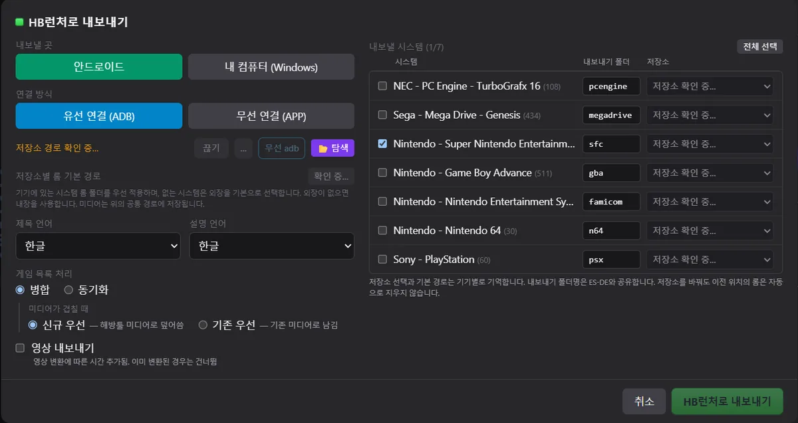
| 내보낼 곳Destination | 이렇게 합니다How |
|---|---|
| 안드로이드 · 유선 연결 (ADB)Android · wired (ADB) | USB 케이블로 연결 → 기기 연결. 연결하면 해방런처의 "모든 파일 접근"도 알아서 켜 줍니다.Plug in USB → Connect device. HB Launcher's "All files access" is switched on for you. |
| 안드로이드 · 무선 연결 (APP)Android · wireless (APP) | 해방런처에서 무선 받기를 켜고(시스템 화면 SELECT) → 자동 찾기. IP 를 몰라도 됩니다.Turn on wireless receive in HB Launcher (SELECT on the system screen) → Auto find. No IP needed. |
| 내 컴퓨터 (Windows)This PC (Windows) | 해방런처 위치 (hblauncher.exe)를 고릅니다. 롬은 복사하지 않고 원래 자리를 가리키며, 영상은 MP4 그대로 씁니다.Pick HB Launcher location (hblauncher.exe). ROMs aren't copied — the library points at them — and videos stay MP4. |
- 저장소 — 시스템마다 내장 · SD 카드를 고릅니다. 런처가 읽는 라이브러리 자리에 맞춰 씁니다.Storage — pick internal or SD per system; the library goes where the launcher reads it.
- 병합은 기기에 있던 게임을 살리고, 동기화는 해방툴 목록에 맞춥니다.Merge keeps the device's games; Sync makes the device match the Rom Tool list.
- 영상 내보내기를 켜면 케이스를 열었을 때 볼 영상도 보냅니다(변환 시간이 더 걸림).Export videos also sends the clip shown when a case opens (takes longer to convert).
HB런처 바로실행 (Windows)HB Launcher direct run (Windows)
시스템 목록 위 HB런처 단추를 누르면 아무것도 복사하지 않고 지금 라이브러리로 해방런처를 바로 켭니다. 처음 한 번 설정 › HB런처 바로실행에서 런처 경로를 정합니다.The HB Launcher button above the systems opens HB Launcher on the current library without copying anything. Set the launcher path once in Settings › HB Launcher run.
08 — EMULATORS
실행기 · 컨트롤러 설정Emulators and controllers
시스템 목록 위 아이콘으로 어떤 에뮬레이터(코어)로 켤지와 패드 버튼 배치를 정해 함께 내보냅니다.Icons above the system list set which emulator (core) launches each system and the pad layout, sent along with the export.

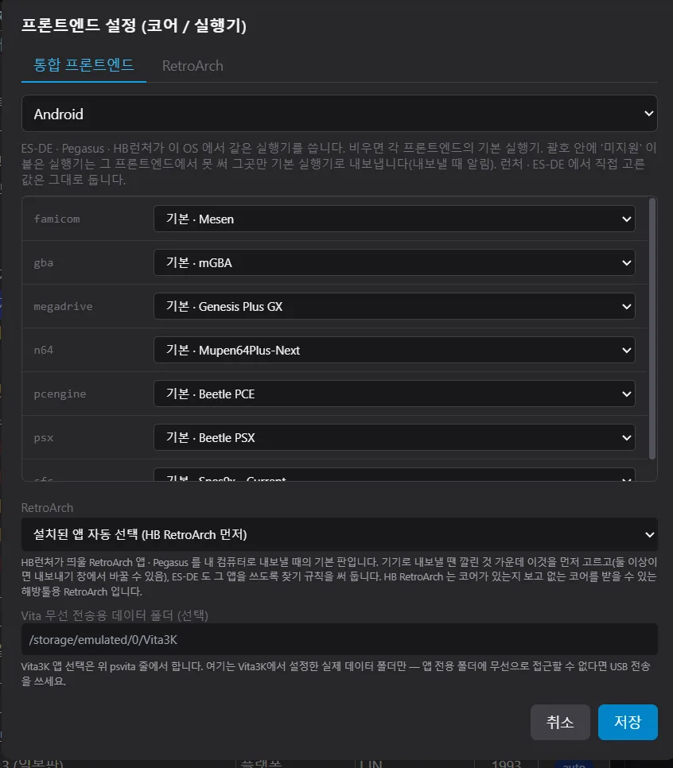
- 통합 프론트엔드 — OS(Android · Windows · 리눅스)마다 시스템별 실행기를 한 번 정하면 ES-DE · Pegasus · 해방런처에 똑같이 들어갑니다.Unified front-ends — set each system's emulator once per OS, and ES-DE, Pegasus and HB Launcher all get the same.
- RetroArch 앱 — "설치된 앱 자동 선택 (HB RetroArch 먼저)"가 기본입니다.RetroArch app — "auto (HB RetroArch first)" is the default.
- 아케이드 — MAME / FBNeo 롬은 롬셋을 보고 켜지는 코어를 알아서 고르고(FBNeo → MAME 2003-Plus → MAME 2010), 정보 칸의 구동코어 칩으로 게임마다 바꿀 수 있습니다.Arcade — MAME / FBNeo ROMs get a working core from the romset (FBNeo → MAME 2003-Plus → MAME 2010), and the core chip in the info panel changes it per game.
| 설정Setting | 내용What |
|---|---|
| 컨트롤러 키 설정Controller mapping | 시스템별 패드 버튼 배치(리맵)를 만들어 내보냅니다.Per-system button remaps, exported with the library. |
| 게임별 패드 설정Per-game pads | DOS(키보드 → 패드) · 아케이드(.rmp) · Dolphin(Wii / GC) 게임별 설정DOS (keyboard → pad), arcade (.rmp) and Dolphin (Wii / GC) per game |
| 🌐 리전 순서🌐 Region order | 어느 지역판 그림 · 이름을 먼저 쓸지Which region's art and names come first |
09 — IMPORT
이미 세팅된 라이브러리 가져오기Importing an existing library
다른 프론트엔드로 세팅해 둔 목록을 그대로 들여옵니다. + 시스템 → 외부 세팅 정보 (가져오기).Bring in a list you already set up elsewhere: + System → External library (Import).
| 어디서From | 읽는 것Reads |
|---|---|
| 내 컴퓨터This PC | ES-DE(gamelists) · Pegasus(metadata.pegasus.txt) — 롬 루트는 알아서 짐작하고, 틀리면 고칩니다.ES-DE (gamelists) and Pegasus (metadata.pegasus.txt) — the ROM root is guessed and can be corrected. |
| 안드로이드Android | ES-DE · Pegasus — USB 디버깅으로 연결. 롬 · 미디어를 고른 폴더로 복제해 옵니다(기기는 읽기만).ES-DE and Pegasus over USB debugging. ROMs and media are copied to a folder you pick (the device is only read). |
| 커스텀 리눅스 (SFTP)Custom Linux (SFTP) | EmulationStation 목록 · muOS · OnionOS · 순정 OS 의 게임 폴더EmulationStation lists, plus muOS, OnionOS and stock-OS game folders |
- 기기 검색 → 시스템과 게임 수가 먼저 뜹니다.Scan — systems and game counts appear first.
- 가져올 시스템을 체크하고 표시 이름 앞에 붙일 말(예: [Android])을 정합니다.Tick the systems and pick a name prefix (e.g. [Android]).
- 실행하면 고른 시스템의 롬 · 미디어만 받아 등록합니다.Run — only the chosen systems' ROMs and media are fetched and registered.
10 — TOOLS
도구Tools
오른쪽 위 도구. 기기에 앱 깔기, 세이브 모으기, BIOS 확인처럼 라이브러리 밖의 일을 합니다.Tools at the top right handles jobs outside the library — installing apps, gathering saves and checking BIOS files.

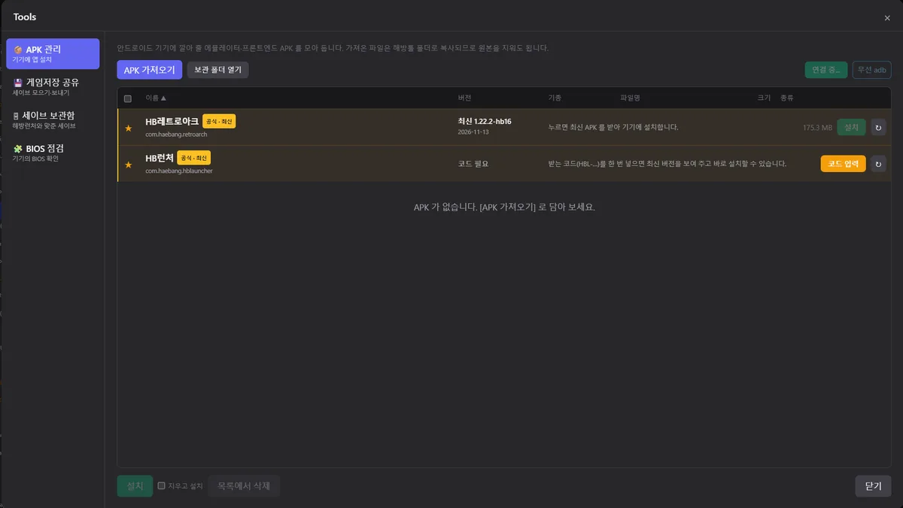
| 시트Sheet | 하는 일What it does |
|---|---|
| 📦 APK 관리📦 APK | APK 를 모아 두고 기기에 설치합니다. 공식 앱(HB레트로아크 · HB런처)은 최신 버전을 받아 바로 설치(HB런처는 구매 코드를 한 번만 넣음). 기기 연결 · 무선 adb 둘 다 됩니다.Keep APKs and install them on a device. The official apps (HB RetroArch, HB Launcher) download the latest and install directly — HB Launcher asks for your purchase code once. USB or Wireless adb. |
| 💾 게임저장 공유💾 Game saves | PC · 기기의 롬저장(.srm 등)을 모아 두고 다른 기기로 보냅니다.Collects cartridge saves (.srm etc.) from the PC or a device and sends them to another. |
| 🗄 세이브 보관함 PRO🗄 Save vault PRO | 해방런처와 맞춘 세이브(롬저장 + 상태저장)를 버전별로 보관하고 되돌립니다. 자세히Keeps versions of saves synced with HB Launcher (cartridge saves + save states) and restores them. More |
| 🧩 BIOS 점검🧩 BIOS check | 기기의 BIOS 파일이 있는지 · 맞는지 시스템별로 확인합니다(안드로이드 USB · 리눅스 Wi-Fi).Checks per system whether a device's BIOS files are present and correct (Android USB, Linux Wi-Fi). |
기기 탐색기 · 파일 편집Device browser and file editing
내보내기 창에서 기기를 연결한 뒤 📂 탐색을 누르면 기기 안을 직접 둘러보고, 폴더를 만들고, 파일을 옮기고, gamelist.xml · .cfg 같은 글 파일을 더블클릭으로 고칠 수 있습니다. 롬 경로를 눈으로 보고 정할 때 편합니다.After connecting a device in the export window, 📂 Browse lets you look around it, make folders, move files and double-click text files such as gamelist.xml or .cfg to edit them — handy for picking ROM paths by eye.
11 — PRO
PRO 기능PRO features
PRO 업그레이드 코드를 위쪽 PRO UPGRADE에 넣으면 이 PC 가 PRO 가 됩니다(받은 뒤 48시간 안, PC 한 대). 새 버전을 깔아도 PRO 는 그대로입니다.Enter a PRO upgrade code in PRO UPGRADE and this PC becomes PRO (within 48 hours of receiving it, one PC). PRO survives reinstalling new versions.
외부 기기로 전환 — 기기를 바로 고치기Switch to device — edit a device directly

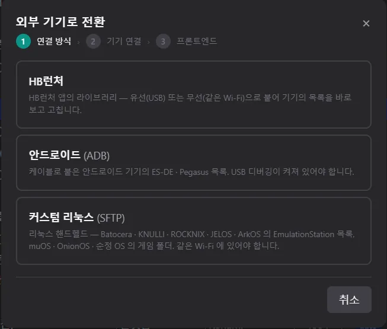

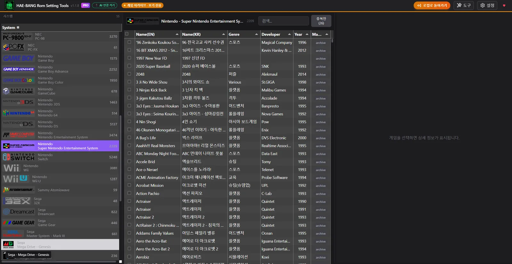
기기의 ES-DE · Pegasus · 해방런처 · 리눅스 목록을 PC 로 옮기지 않고 그대로 해방툴 목록으로 엽니다. 메타 고치기, 그림 바꾸기, 재스캔, 실행기 설정, 게임 추가 · 삭제가 기기에 바로 들어갑니다. 위쪽에 청록 배지(기기 이름 · 연결 방식)가 뜨고, 끝나면 로컬로 돌아가기.Opens the device's ES-DE, Pegasus, HB Launcher or Linux list in place — no copy to the PC. Meta edits, art, rescans, emulator settings and adding or deleting games go straight to the device. A teal badge shows the device and connection; Back to Local when done.
- 미등록 배지 — 기기에 롬 폴더는 있는데 목록에 없는 시스템. 눌러서 등록합니다.Unregistered badge — a ROM folder on the device that isn't in the list yet. Click to register it.
- 기기에 시스템 추가 — 롬 저장소(내장 · SD)와 경로를 고르고, 용량을 확인한 뒤 만듭니다.Add a system on the device — choose storage (internal / SD) and path, check the size, then create.
- [코어 받기] — USB 로 붙은 기기의 HB레트로아크에 없는 코어를 받아 줍니다.[Get core] — fetches missing cores for HB RetroArch on a USB-connected device.
전자상가 · 세이브 보관함Retro Mall and save vault

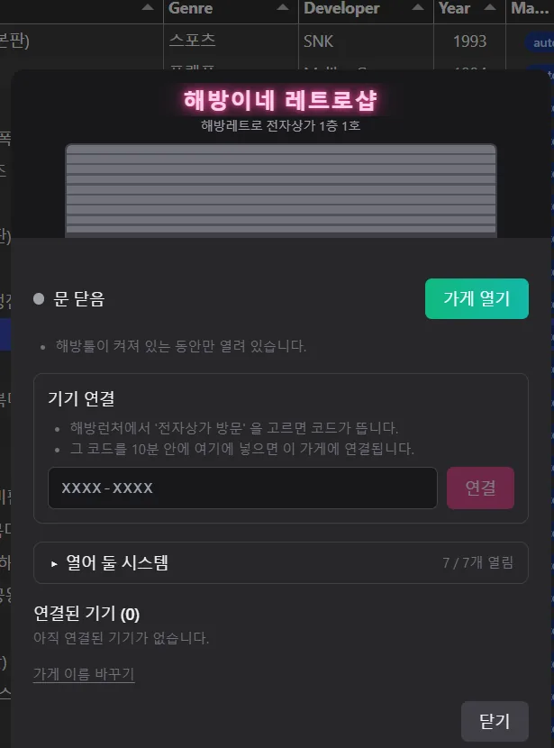
- 전자상가 — 내 라이브러리를 인터넷 가게로 열면, 해방런처 기기(안드로이드 · Windows)가 들어와 구경하고 장바구니에 담아 가져갑니다. 열어 둘 시스템을 고를 수 있고, 해방툴을 켜 둔 동안만 열립니다.Retro Mall — open your library as an online shop; HB Launcher devices (Android, Windows) come in, browse and take games home in a cart. Choose which systems to show; the shop is open only while the Rom Tool runs.
- 세이브 보관함 — 해방런처 0.8.0 의 세이브 창에서 가게와 맞추기를 누르면 롬저장 · 상태저장이 이 PC 에 버전별로 쌓입니다. 다른 기기에서 이어 하고, 잘못되면 되돌리기.Save vault — when HB Launcher 0.8.0's save window runs sync with shop, cartridge saves and save states are kept here by version. Continue on another device, or Restore if something goes wrong.
AI 연결 (MCP)AI link (MCP)
위쪽 AI 연결 켜기 → 설정 › AI 연결 (MCP) 에서 Claude Desktop · Codex 에 등록하면, 그 AI 에게 말로 시키는 일을 해방툴이 합니다(예: "슈퍼패미컴 게임 중 그림 없는 것 찾아 줘"). 지우기 같은 위험한 일은 매번 해방툴 화면에서 허용을 묻습니다.Press Turn on AI link → Settings › AI connection (MCP) and register Claude Desktop or Codex; the Rom Tool then carries out what you ask the AI (e.g. "find Super Famicom games with no art"). Risky actions such as deleting always ask for permission in the app.
게임 아카이브 · HB파일Game archive and HB file
- 게임 아카이브로 전환 — 롬이 없어도 55개 시스템의 게임 정보 · 그림 · 영상을 해방툴 안에서 둘러봅니다.Game archive — browse info, art and video for 55 systems inside the app, no ROMs needed.
- HB파일 (.hbs) — 시스템 묶음을 파일 하나로 저장하고 불러옵니다. 자동 보관본으로 되돌릴 수도 있습니다.HB file (.hbs) — save or load your systems as one file, with automatic backups to roll back to.
12 — SETTINGS
설정Settings
오른쪽 위 설정. 왼쪽 항목을 고르면 오른쪽에 자세한 설정이 나옵니다.Settings at the top right — pick an item on the left to see its details on the right.

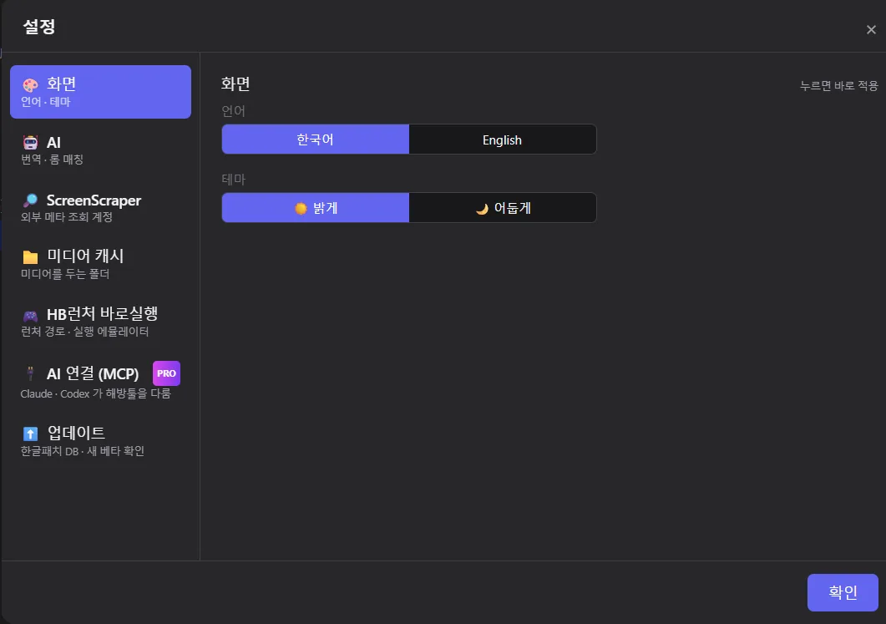

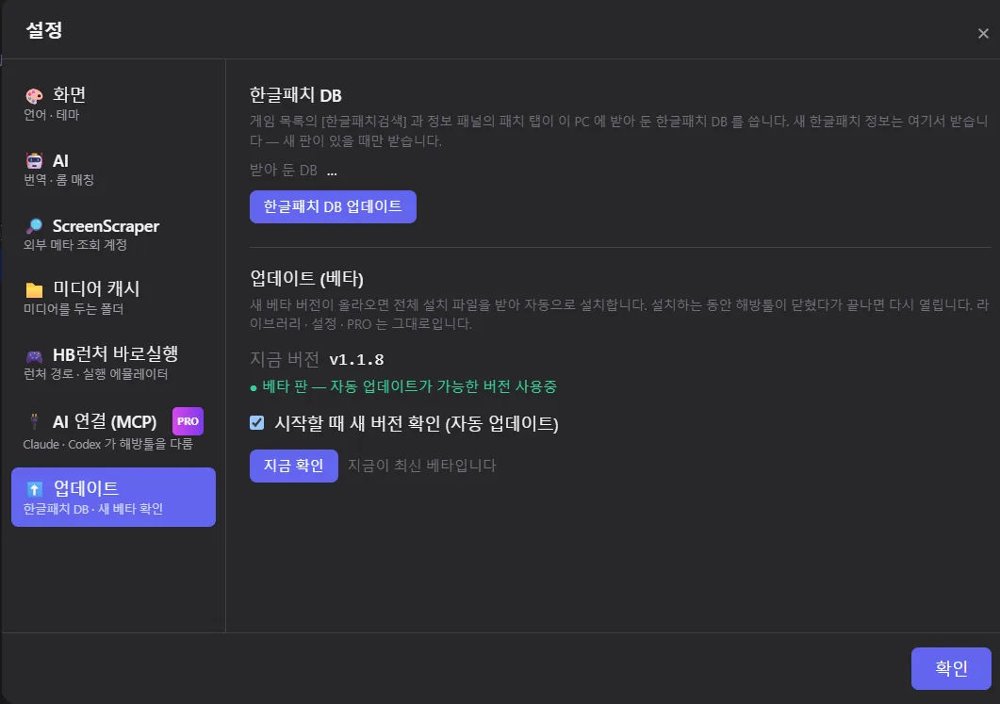
| 항목Item | 설정Settings |
|---|---|
| 🎨 화면🎨 Display | 언어 · 테마. 다시 켜지 않아도 바로 바뀝니다.Language and theme — applied instantly. |
| 🤖 AI🤖 AI | 매칭 · 번역에 쓸 AI(Gemini · ChatGPT · Claude)와 모델, API 키The AI (Gemini, ChatGPT, Claude), model and API key for matching and translation |
| 🔎 ScreenScraper🔎 ScreenScraper | DB 에 없는 게임을 찾을 때 쓰는 계정Account used to look up games missing from the database |
| 📁 미디어 캐시📁 Media cache | 그림 · 영상을 받아 두는 폴더(바꾸면 받은 것도 옮길 수 있음, 다시 시작해야 적용)Folder for downloaded art and video (can move existing files; applies after restart) |
| 🎮 HB런처 바로실행🎮 HB Launcher run | 바로실행에 쓸 런처 경로 · 에뮬레이터Launcher path and emulators for direct run |
| 🔌 AI 연결 (MCP) PRO🔌 AI connection (MCP) PRO | Claude Desktop · Codex 등록 · 연결 시험 · 기록Register Claude Desktop / Codex, test the link, view logs |
| ⬆️ 업데이트⬆️ Update | 한글패치 DB 받기 · 새 베타 확인 · 시작할 때 자동 확인Korean patch DB, check for a new beta, auto-check at start |
13 — FAQ
자주 묻는 것FAQ
막히기 쉬운 곳을 모았습니다. 영상으로 보고 싶다면 해방레트로 유튜브의 해방툴 재생목록을 보세요.The usual sticking points. Prefer video? See the Rom Tool playlist on HAE-BANG RETRO on YouTube.
| 이럴 때When | 이렇게Try this |
|---|---|
| 게임이 다른 게임으로 잡혔어요A game matched the wrong title | 우클릭 → 메타 편집에서 맞는 후보를 고르거나 검색합니다. 설정 › AI 를 켜 두면 애매한 것은 AI 가 고릅니다.Right-click → Edit meta and pick or search for the right one. With AI on, unclear names are settled by the AI. |
| 안드로이드 기기가 연결되지 않아요The Android device won't connect | USB 디버깅을 켜고, 기기에 뜨는 "USB 디버깅 허용"을 누릅니다. TV 처럼 케이블이 어려우면 무선 adb를 씁니다.Enable USB debugging and accept the prompt on the device. For TVs and the like, use Wireless adb. |
| 기기에서 게임이 안 켜져요Games won't launch on the device | 실행기 설정에서 코어 · 앱이 기기에 있는지 확인합니다. RetroArch 가 검은 화면이면 대개 코어가 없는 것입니다 — HB레트로아크는 알아서 받습니다.Check the core or app in emulator settings. A black RetroArch screen usually means a missing core — HB RetroArch fetches them for you. |
| 공간이 모자라다고 나와요It says there isn't enough space | 저화질 모드를 켜거나, 보낼 미디어 · 시스템을 줄이거나, 시스템을 SD 카드로 보냅니다.Turn on low-res mode, send fewer media types or systems, or put the system on the SD card. |
| 해방런처에 게임이 안 보여요Games don't show in HB Launcher | 해방런처 문서의 문제 해결을 보세요.See troubleshooting in the HB Launcher guide. |
| 새 베타가 나왔는지 어떻게 알아요?How do I know a new beta is out? | 설정 › 업데이트의 자동 확인을 켜 두면 앱을 켤 때 알려 주고, 지금 업데이트로 설치 · 다시 시작까지 합니다.Keep the auto-check in Settings › Update on; it tells you at start-up and Update now installs and restarts. |